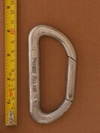

| Image | Summary | ||||
|---|---|---|---|---|---|
 | Pierre Allain (asymmetric D) | asymmetric D | n/a | n/a | gate made from tubing, from an early carabiner manufacturer |
 | Pierre Allain (asymmetric D) (alt) | asymmetric D | n/a | n/a | gate made from tubing, from an early carabiner manufacturer |
 | Pierre Allain (asymmetric D) (anodized gate) | asymmetric D | n/a | n/a | anodized gate made from tubing, from an early carabiner manufacturer |
 | Pierre Allain (latchless) (v1) | asymmetric D | n/a | n/a | non-load-bearing gate, early design |
|  | Pierre Allain (latchless) (v1b) | asymmetric D | n/a | n/a | non-load-bearing gate, early design |
 | Pierre Allain (latchless) (v2) | asymmetric D | n/a | n/a | non-load-bearing gate, early design |
 | Pierre Allain (latchless) (v2b) | asymmetric D | n/a | n/a | non-load-bearing gate, early design |